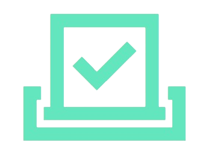

<ion-content [fullscreen]="true">

  <div id="container" style="display: flex; flex-direction: column; height: 100%;">
    <br>
    <div style="display: flex; align-items: center; justify-content: space-between; background-image: url(../../assets/img/fondo.jpg);">
      <br><br>
      <ion-text color="light" style="font-size: large; font-weight: 800; font-family: 'Gill Sans', 'Gill Sans MT', Calibri, 'Trebuchet MS', sans-serif;" >Bienvenido/a, {{usuario}}</ion-text>
      <br>
    </div>

    <div style="flex: 1; display: flex; flex-direction: column; justify-content: center; align-items: center;">

      <ion-button class="seleccion" (click)="tomarFoto()" style="height: 140px; font-size: large; width: 90%;"><br>&nbsp; &nbsp;&nbsp;TOMAR FOTO </ion-button>

      <ion-button  class="seleccion" (click)="accederVotacion()" style="height: 140px; font-size: large; width: 90%;"><br>REALIZAR VOTACION</ion-button>

      <ion-button class="seleccion" (click)="accederGraficos()" style="height: 140px; font-size: large; width: 90%;"><br><br>&nbsp; &nbsp; VER  &nbsp; &nbsp;GRAFICOS</ion-button>

    </div>

    <div style="margin-left: 10px; margin-bottom: 10px;">
      <ion-button (click)="cerrarSesion()" shape="round" size="small" color="danger"></ion-button>
    </div>

    <div class="overlay" *ngIf="procesandoImagen"></div>

  </div>
</ion-content>
